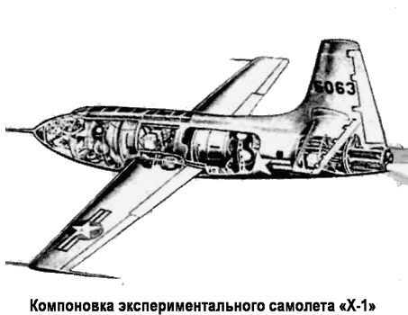
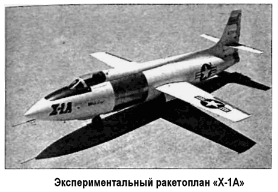

Экспериментальный ракетоплан «Х-1»
Америка по праву гордится своей авиацией. И это правильно, ведь тут есть чем гордиться.
На счету американцев не только первый полет крылатого аппарата тяжелее воздуха (братья Райт, 17 октября 1903 года), но и целый венок мировых авиационных рекордов: по скорости, по дальности беспосадочного полета, по грузоподъемности, по высоте. Отдельные из этих рекордов оспариваются, другие со временем перестали быть рекордами. Но любовь американцев к своей авиации непреходяща, летчики в этой стране всегда были на положении национальных героев, а ВВС вкупе с авиацией ВМФ считались и считаются до сих пор основой военной мощи США, инструментом по преобразованию мира в пользу американских налогоплательщиков.
Поэтому нет ничего удивительного в том, что когда во время Второй мировой войны разведка из Европы стала докладывать о появлении у нацистов новых истребителей — реактивного «Ме-262» и ракетного «Ме-163», — в Министерстве обороны США забеспокоились и приняли соответствующие меры.
В декабре 1943 года на совместном заседании представители ВВС, ВМС и промышленности США наметили программу исследования высоких скоростей полета с перспективой их использования для военных целей. Поскольку промышленность в то время была перегружена массовым производством боевых самолетов, лишь фирма «Белл» («Bell Aircraft Corp.») согласилась взяться за эту программу. 30 ноября 1944 года с ней было подписано соглашение о строительстве опытного самолета с жидкостным ракетным двигателем «М-Икс-524» (первоначальное обозначение «МХ-524», затем «МХ-1», «XS-1» и последнее — «Х-1»).
Основные технические параметры машины были сформулированы специалистами Национального консультативного совета по аэронавтике НАКА, а строительство финансировалось военно-воздушными силами. В конце 1944 года группа инженеров под руководством конструктора Вудса приступила к проектированию «Х-1».

В январе 1946 года образец гиперзвукового ракетоплана был построен. Первые его испытания были направлены на отработку аэродинамических характеристик планера и осуществлялись следующим образом. Не оснащенный двигателем опытный планер «Х-1» на скорости 240 км/ч отделялся от носителя, которым служил бомбардировщик «В-29», затем планировал и приземлялся на аэродром.
Однако уже 9 декабря 1946 года испытатель Чальмерс Гудлин поднял в воздух второй экземпляр «Х-1» с ракетным двигателем, к двадцатому полету достигнув скорости, близкой к звуковой. Еще через год летчик Чарльз Егер впервые на «Х-1» превысил скорость звука.
До января 1949 года было совершено еще около 80 полетов.
Последний был выполнен при самостоятельном старте с земли с половинным запасом топлива. Всего компания «Белл» изготовила три самолета «Х-1», последний из которых в 1951 году потерпел катастрофу и разбился, первый был передан в музей в 1949 году, а второй был модернизирован и получил наименование «Икс-IE» («Х-1Е»).
Самолет «Х-1» представлял собой среднеплан (длина — 9,45 метра, высота — 3,26 метра, взлетная масса г- 6354 килограмма), построенный по классической схеме, с прямым трапециевидным крылом (размах — 8,54 метра), оснащенным закрылками и элеронами. Обшивка крыла выполнялась из дюралевых листов толщиной 12,7 миллиметра в околофюзеляжных частях и приблизительно 3,2 миллиметра на концах.
Оперение — классической схемы, с рулями высоты и направления, причем стабилизатор закреплен шарнирно и оснащен серводвигателем с винтовым домкратом, обеспечивающим изменение угла установки стабилизатора в полете.
Так как самолет рассчитывался на максимальную скорость около 2720 км/ч, то основное внимание было уделено аэродинамическому проектированию фюзеляжа.
В рамках предварительных исследований проводился анализ траекторий баллистических моделей и возникающих при их движении ударных волн. Эти исследования проводились с использованием фотоснимков, полученных при испытаниях на баллистических трассах, которые дополнялись испытаниями соответствующих моделей в аэродинамической трубе. В результате было установлено, что наилучшей для корпуса сверхзвукового самолета является форма, подобная форме снаряда. Из этих соображений кабина пилота была полностью вписана в геометрический контур фюзеляжа с использованием для этого неразъемного фонаря и расположенной с правой стороны дверцы кабины. Частые аварии и катастрофы вынудили конструкторов использовать типовой фонарь кабины с неподвижной передней и откидной остальной частью.
Трехстоечное шасси с одинарными колесами полностью убиралось в фюзеляж. Планер самолета был рассчитан на перегрузки от +18 до -10 g.
Все ракетопланы «Х-1» были снабжены четырехкамерными жидкостными ракетными двигателями «XLR-11-RM-5» производства компании «Риэкшн моторз» («Reaction Motor Inc») с тягой 2722 килограмма Система управления двигателем позволяла включать в работу любое число камер (от одной до всех четырех), каждая из которых развивала максимальную тягу в 680,5 килограмма. Топливо (спирт и жидкий кислород) находилось в баках, размещенных соответственно за узлами крепления крыла и перед ним.
В проекте предусматривалось, что топливо будет подаваться к двигателю с помощью насосов, однако в самолете «Х-1» была применена вытеснительная система подачи, поскольку насос с необходимыми характеристиками своевременно разработать не удалось. Вытеснительная система состояла из 12 сферических баллонов с азотом, что значительно увеличило собственную массу самолета. В целях уменьшения взлетной массы количество топлива ограничили до 2310 килограммов, что повлекло за собой сокращение времени работы двигателя с планировавшихся 10 до 2,5 минут.
В конце 1951 года начались работы по созданию ракетоплана «Икс-1А» («Х-1 А»), представляющего собой усовершенствованный вариант третьего образца самолета «Х-1», который предназначался для исследований при более высоких сверхзвуковых скоростях полета.
Для того чтобы увеличить скорость ракетоплана, конструкторам пришлось увеличить запас топлива на 2680 килограммов и продлить время работы двигательной установки при максимальной тяге до 4,2 минуты. Конструктивно это привело к удлинению фюзеляжа на 1,4 метра, что позволило разместить дополнительные топливные баки.
В целях повышения безопасности на период проведения испытаний самолета жидкий кислород заменили раствором перекиси водорода Летные испытания «Х-1А» были начаты в апреле 1953 года. 12 декабря пилот Егер достиг на нем максимальной скорости 2655 км/ч (М = 2,5) на высоте свыше 21 километра, а летом 1954 года — максимальной высоты 27450 метров.
Летом 1955 года ракетоплан «Х-1А» взорвался спустя 17 секунд после его отделения от самолета-носителя «В-29».
Второй экземпляр «Х-1А», приспособленный для проведения исследований аэродинамического нагрева, получил обозначение «Икс-1Б» («Х-1В»). Исследования проводились с 1954 по 1958 год, после чего машина была переоборудована для оценки эффективности системы трехосного струйного (реактивного) управления.

Кроме вышеназванных пяти ракетопланов, был построен также опытный образец модификации «Икс-1Д» («X-1D») (программа «Х-1С» была аннулирована до завершения разработки соответствующего варианта самолета), который взорвался 22 августа 1951 года в момент отделения от носителя «В-50».